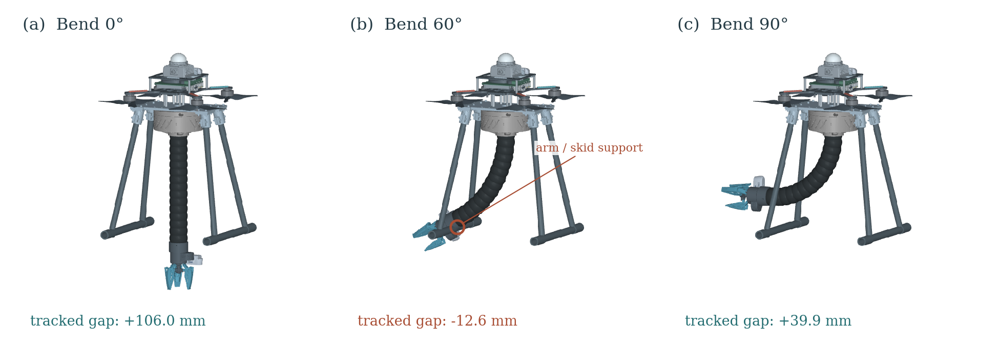
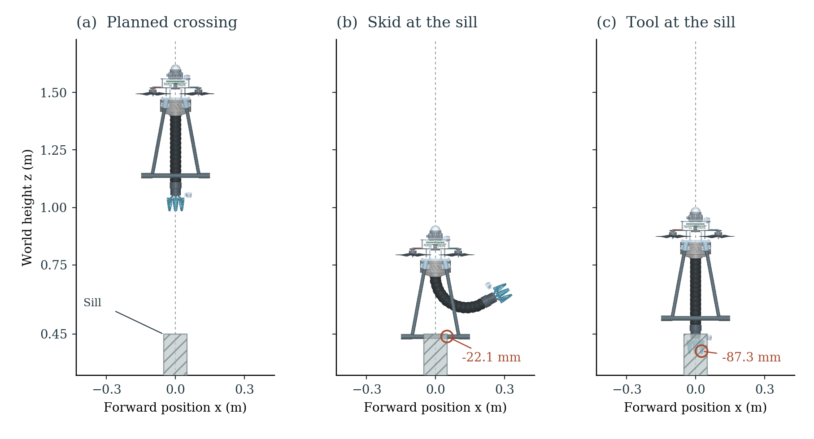
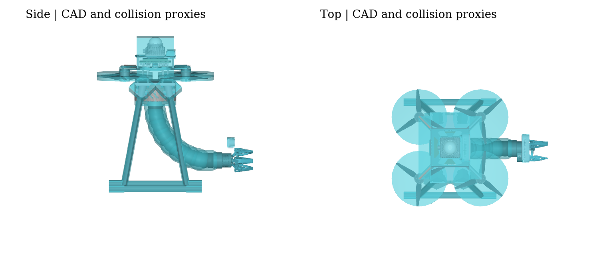
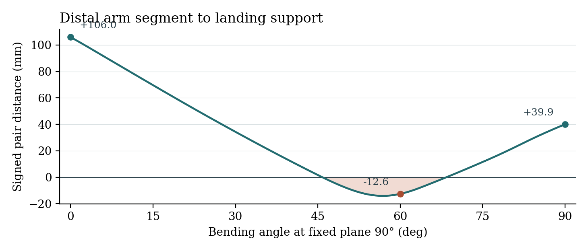

D · 整机几何与规划接收 / 2026-11-18 15:27（北京时间）
弯臂会碰到哪里，哪条轨迹能通过单门
把 SUPER 机架、长起落架和 Qingyu 臂接入规划与接收检查。34 项检查符合预期；正常高度的候选通过，两条触及门槛的低空路线和一条中途自碰的弯臂动作被拒绝。
模型与场景

01同一弯曲平面上的三个姿态
追踪同一段臂体和起落架支撑件。0°、60°、90° 的间距分别为 +106.0、−12.6、+39.9 mm。红圈标出 60° 时的接触位置。


02同一门槛上的三条候选路线
三幅图共用尺度。正常高度的规划轨迹通过门洞。两条指定低空路线分别让起落架和夹指进入下门槛 22.1 mm 和 87.3 mm。


03模型与碰撞体的侧视、俯视叠加
在同一坐标系内显示 SUPER 机架、长起落架和 Qingyu 臂，以及用于检查的碰撞体。

曲线与机制图

01从直臂到 90° 的有符号间距
曲线固定追踪臂段 arm7 和起落架支撑 168。低于零的位置表示该对部件发生穿透。逐角原始值见 CSV。

视频回放
01几何回放 · 从直臂弯至 90°
摄像机和机身固定。按 1° 步长回放模型姿态，彩圈标出所追踪部件的接触。
论文与报告
从本轮完整论文抽取的原页。图 10 解释中途自碰，图 11 对比可通轨迹与两种触碰下门槛的姿态。
保留原始模型图像、矢量坐标轴和接触标注。
可直接用于报告；纵轴单位为毫米。
数据及运行记录
期望、实际、首个失败样本及相关净空。布尔列表示对应测试条件是否成立。
包含种子、短连接、门框、自碰、直接接管、五次桥接、缓冲替换和超时用例。
弯曲角、指定部件的有符号距离、任意部件穿透标志；共 181 个姿态。
保存的穿透分类、原生碰撞引擎分类和 1 mm 自碰裕度判定。
记录规划时间、位置、偏航和两维弯曲状态。该表是候选轨迹。
包含源代码提交、输入哈希、门框尺寸和地图分辨率。
确定的已观测栅格及障碍占据，可按同一参数复算。
含终止原因、耗时及候选验证指标。
给出获准候选的裕度、接收结果和独立采样数量。
汇总 34 项检查、7 个获准案例、48 个静态姿态和不同步长下的首次触发位置。
保留本轮每项判断与规划阶段。